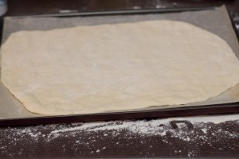
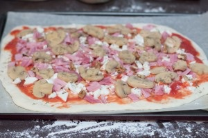
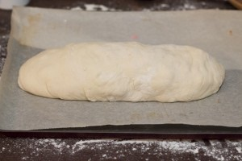
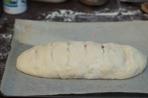
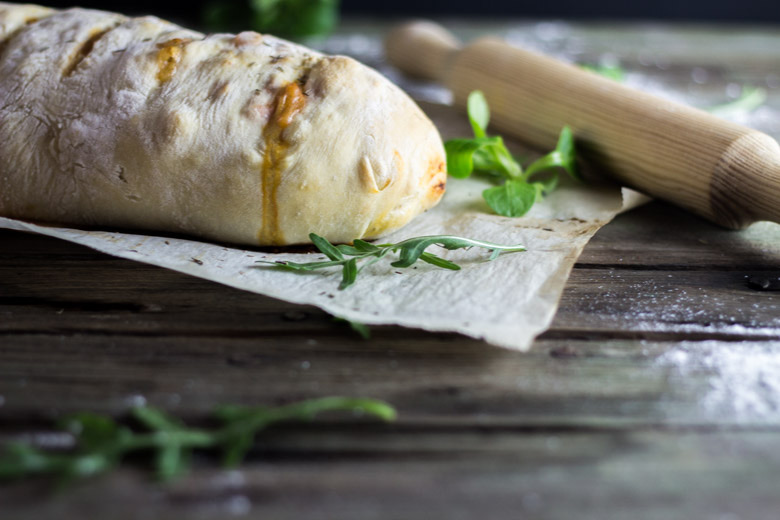
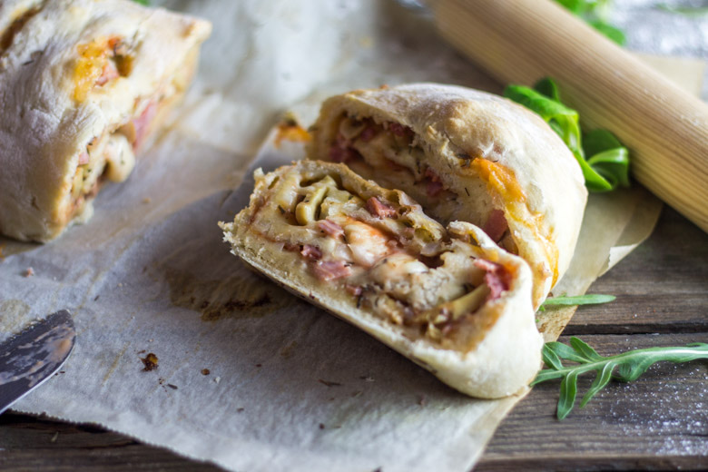

Pizza stromboli

Non non non on ne va pas parler de l’histoire d’un volcan, mais bel et bien d’une pizza qui s’appelle pizza stromboli!
Si un jour on m’avait dit qu’une calzone et une pizza pouvaient s’accoupler je pense que je n’y aurais jamais cru et pourtant… La recette de la pizza stromboli en est la preuve vivante et c’est encore meilleure qu’une pizza et qu’une calzone séparément. Qui sait peut être qu’un jour une lionne et un chat pourront s’accoupler eux aussi et le résultat sera carrément « waaaoooouh » comme cette pizza!! Bref, on ne va pas faire de tests ni aller au-delà des lois de la nature et on va continuer d’accoupler de la nourriture ce sera parfait comme expérience^^. Comme vous pouvez le voir, cette pizza mutante est en réalité une pizza roulée dans laquelle est contenue la garniture. Si vous pensez que c’est encore les Italiens qui ont inventé la pizza stromboli hé bien non!! Wikipédia m’a en effet appris que cette pizza nous vient tout droit de Philadelphie (encore un truc super cool des États-Unis) et qu’elle fut créée en 1950 par un pizzaiolo américano-italiano (bon elle a quand même un peu de sang italien après tout…). Je n’en suis pas à mon premier essai car oui, nous l’avons totalement adopté (je ne sais pas par contre si on adopterait le chat-lion…) à tel point que nous en mangeons plus que des pizzas. Je dirais qu’on peut y mettre un peu de tout, à l’exception d’un œuf. J’ai essayé une fois et hélas l’œuf m’a suivi dans « ma roulade de pâte » et n’a jamais voulu rester dans la garniture.
Pour cette première pizza stromboli sur le blog, je vais commencer comme dans les pizzerias qui, en haut de leurs cartes nous proposent leur margherita, à savoir la pizza la plus basique, la plus simple, qui ne demande pas beaucoup d’ingrédients. Là, c’est pareil, ma pizza stromboli est très simple, rapide et quand je l’ai faite la première fois c’était avec un peu tout ce qu’il me restait dans les placards alors elle sera « ma basique, ma margherita à moi ». Par la suite, je ferais (sans doute) des garnitures un peu plus originales! Pour la pâte j’ai tout simplement utilisé la recette pâte à pizza qui est juste ICI avec laquelle il est possible normalement de faire deux pizzas moyennes mais ici je n’en fait qu’un seul stromboli!! Je vous laisse maintenant avec la recette et j’espère qu’elle vous plaira!
Ingrédients
- Farine - 300g
- Sel - 6g
- Eau tiède - 180g
- Huile d'olive - 3 càs
- Levure de boulanger instantanée - 5g
- Sauce tomate (coulis) - 65g
- Mozzarella - 125g
- Jambon blanc - 2 tranches
- Champignons de paris - 80g
- Oignon - 1/2
- Thym
Instructions
- Mélanger la farine, la levure et le sel dons le bol de votre robot (ou dans un grand saladier)
- Ajouter l'eau tiède petit à petit avec l'huile d'olive
- Pétrir au robot ou à la main (8/10min avec le robot 15/20min à la main) Le pétrissage est très important car c'est ce qui va permettre d'obtenir une pâte bien homogène et élastique
- Couvrir d'un linge propre et laisser lever pendant 1h à 2h La pâte doit doubler de volume
- Fariner votre plan de travail et étaler votre pâte au rouleau en l'étirant de toutes parts pour obtenir un rectangle Ou sinon, former la pâte à la main directement une plaque à pâtisserie (25*35cm) préalablement recouverte de papier sulfurisé (c'est ce que je préfère faire je trouve cela plus simple pour la rouler ensuite)
- Maintenant il ne reste plus qu'à les garnir !
- Préchauffer le four à 180°
- Si vous voulez que votre pizza soit facile à rouler et surtout à fermer évitez de mettre trop de garniture sur le bord "final" afin qu'il reste de la pâte pour bien la fermer
- Étaler sur la pâte votre coulis de tomate
- Ajouter de la mozzarella coupée en morceaux Attention si vous achetez des boules de mozzarella, pensez à bien absorber la saumure dans laquelle elles sont contenues à l'aide d'un papier absorbant
- Ajouter le jambon découpé en morceaux puis les champignons
- Partir d'un bord et rouler votre pizza
- Faire adhérer le bord final avec le reste de la pâte (ça se fait tout seul normalement)
- Légèrement entailler le dessus de votre pizza avec la pointe d'un couteau
- Enfourner pour 20 à 25 minutes
- Vous pouvez dorer le dessus avec un jaune d’œufs ou un peu de lait mais c'est comme vous voulez. Ici je ne l'ai pas fait.






Les tips de la communauté
Pizza stromboli très appréciée pour son originalité et sa présentation en rouleau. Plusieurs testeurs ont confirmé le succès de la recette avec enthousiasme. La pâte utilisée est très complimentée et la tenue après cuisson est très bonne.
Astuces
- Pâte très bien dosée et très moelleuse après roulage
- Garnitures doivent rester moelleuses et non sèches après cuisson
- Mettre les œufs directement dans la garniture plutôt que sous
- Laisser reposer la pâte 5-6h pour meilleure montée
Variantes suggérées
- Garnitures carnivores : salami de Gênes, mortadelle, capicollo épicé
- Fromages multiples : provolone et mozzarella
- Saupoudrage d'origan frais sur le dessus
- Viande hachée avec crème fraîche et gruyère possible
- Mini camemberts peuvent remplacer la garniture (idée connexe)
Ajustements signalés
- Technique de roulage importante : rouler comme un gâteau roulé, pas comme un chausson